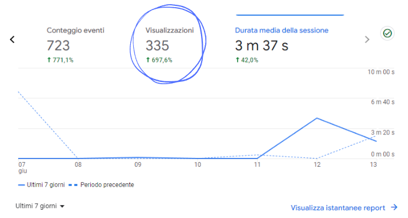
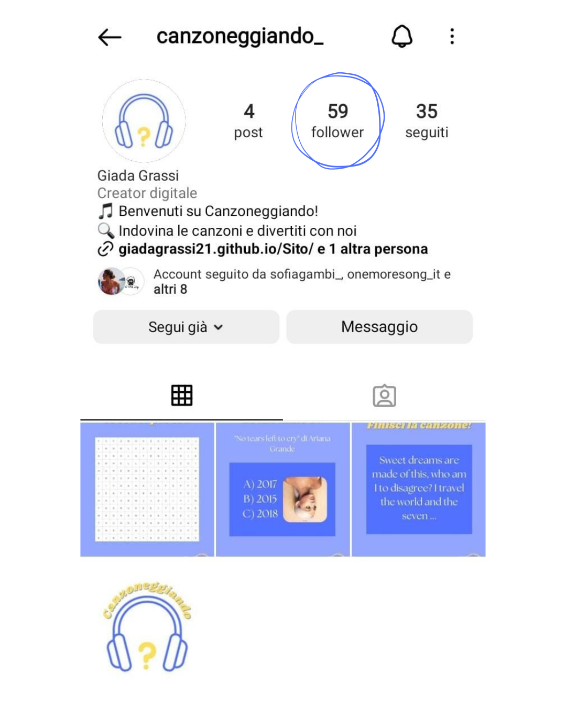

BACKGROUND
Canzoneggiando prende ispirazione principalmente da Heardle per quanto riguarda:
- il meccanismo dietro il sito: ascoltare brevi clip di canzoni popolari e indovinare il titolo;
- il design semplice e intuitivo;
- l'avere un numero limitato di tentativi per indovinare correttamente il titolo della canzone, spingendo gli utenti a fare il loro meglio per trovare la risposta corretta entro quei limiti.
- la visualizzazione dell'embed di Spotify una volta che sono terminati i tentativi a disposizione per indovinare il titolo della canzone, in modo da dare la possibilità all'utente di saperlo;
Tuttavia, rispetto a Song Trivia e/o a Heardle, Canzoneggiando si distingue per diversi aspetti innovativi:
- Canzoneggiando offre un approccio più personalizzato basato sul mood desiderato dal giocatore. Mentre gli altri due potrebbero offrire generi musicali più generici, Canzoneggiando permette agli utenti di selezionare le canzoni da indovinare in base all'emozione che desiderano sperimentare o in base al tipo di canzoni che ascoltano più spesso e, quindi, su cui sono maggiormente preparati;
- Sul sito di Canzoneggiando non c'è pubblicità e ciò rende più piacevole l'esperienza dell'utente;
- Dopo aver completato una canzone, gli utenti possono indovinare immediatamente quella successiva, senza dover avviare una nuova partita o attendere del tempo;
- I giocatori di Canzoneggiando hanno a disposizione 10 tentativi (anziché 6) e 1 indizio (anziché 0) per cercare di indovinare la canzone, fornendo loro più opportunità di successo nel gioco;
- Canzoneggiando offre le playlist delle canzoni presenti nel gioco, in modo tale che gli utenti non debbano segnarsi il nome delle canzoni a cui sono interessati ogni volta che ne scoprono o ne riscoprono una nel corso del gioco, sia perché l'hanno indovinata o sia perché hanno esaurito i tentativi per farlo.
OBIETTIVI COMUNICATIVI
Gli obiettivi comunicativi di Canzoneggiando in termini di comunicazione web sono:
- Ottenere almeno 250 visualizzazioni del sito.
- Raggiungere i 45 follower su Instagram.
Per raggiungere questi obiettivi si è scelto di diffondere delle sfide musicali sui profili social di Canzoneggiando per coinvolgere maggiormente le persone e incuriosirle a visitare il sito.
TARGET AUDIENCE E MESSAGGIO
Canzoneggiando è l'ideale per un pubblico di appassionati di musica e quiz di diverse età. È il sito perfetto per coloro che desiderano divertirsi con quiz musicali e che, al contempo, potrebbero non sentirsi pienamente rappresentati da un genere musicale specifico. Questi utenti scelgono la musica in base allo stato d'animo in cui si trovano, cercando un'esperienza musicale che rispecchi le loro emozioni del momento. Con Canzoneggiando, possono godere di quiz personalizzati che li coinvolgono e li intrattengono nel modo che desiderano. Inoltre, questo sito è adatto anche per chi è alla ricerca di nuove canzoni che suscitino delle specifiche emozioni, dato che sono presenti le playlist delle canzoni usate nel gioco.
Per raggiungere questo target variegato, quindi, verrà utilizzato l’account Instagram del sito (@canzoneggiando_), per rivolgersi alla parte del target più giovane, e l’account Facebook (@Canzoneggiando), per rivolgersi alla parte del target più matura.
PROMOZIONE
La promozione di Canzoneggiando sarà fatta sia attraverso i suoi due canali social principali, in cui è presente l’URL del sito e post che lo pubblicizzano, sia attraverso il passaparola tra le principali piattaforme di messaggistica come Whatsapp.
VALUTAZIONE DEI RISULTATI
Gli obiettivi previsti sono stati raggiunti.
250 visualizzazioni del sito
45 follower su Instagram
